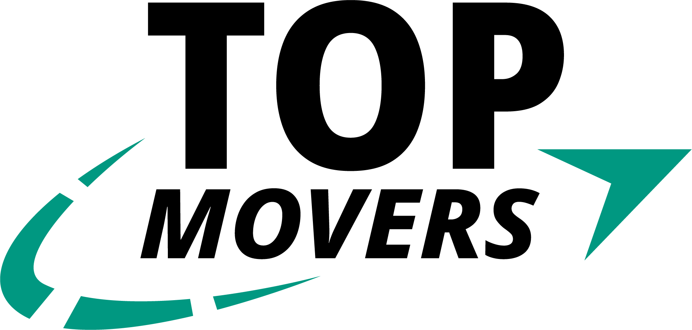
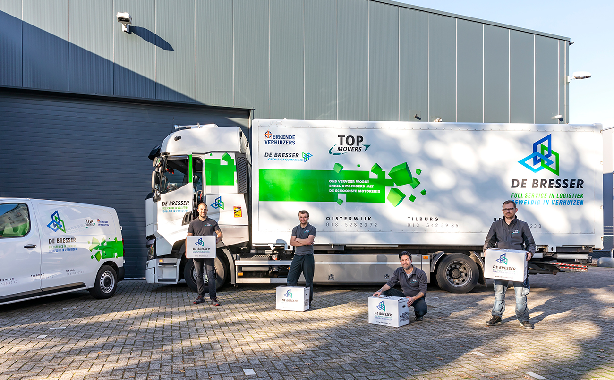
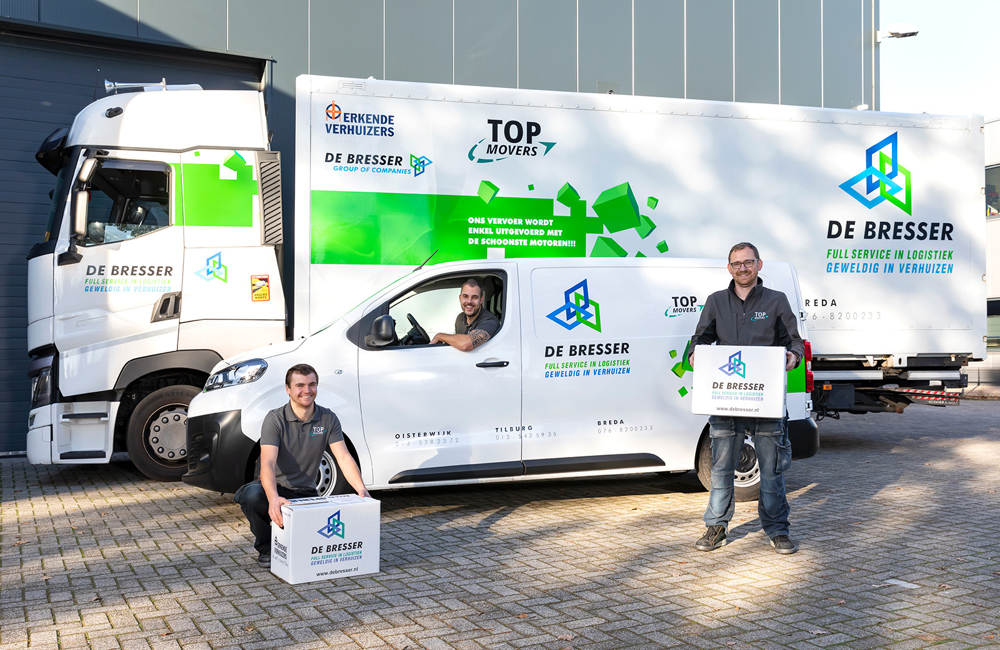
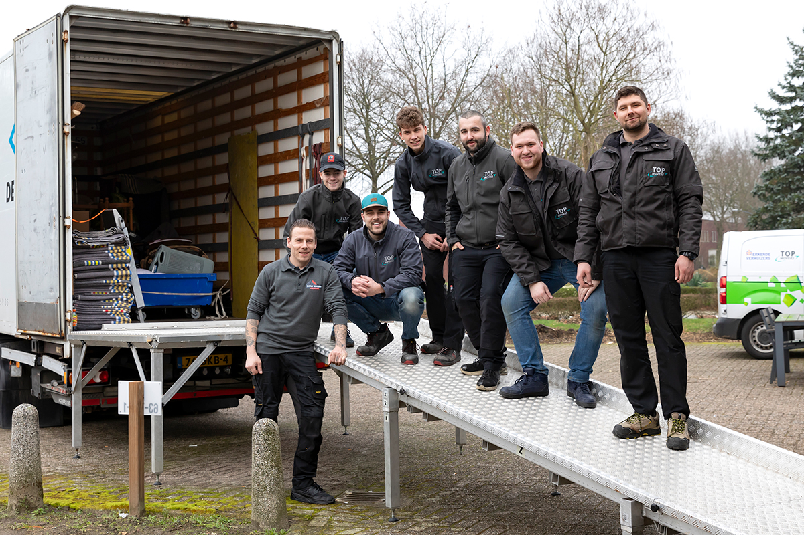
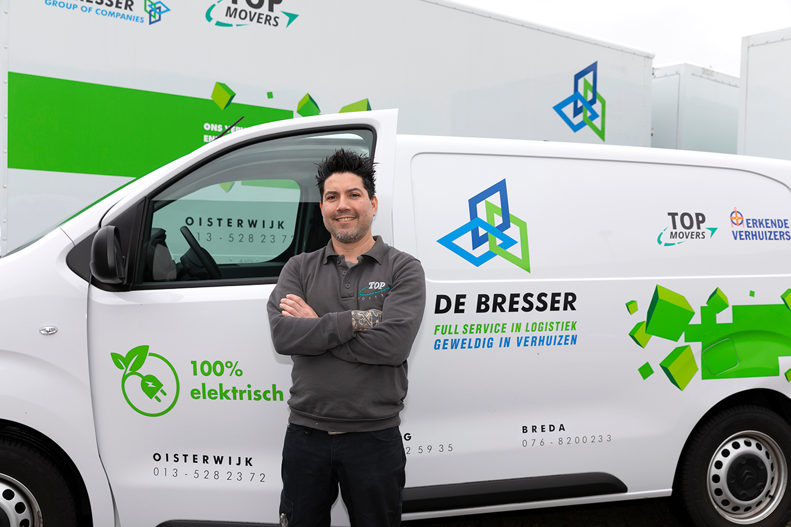
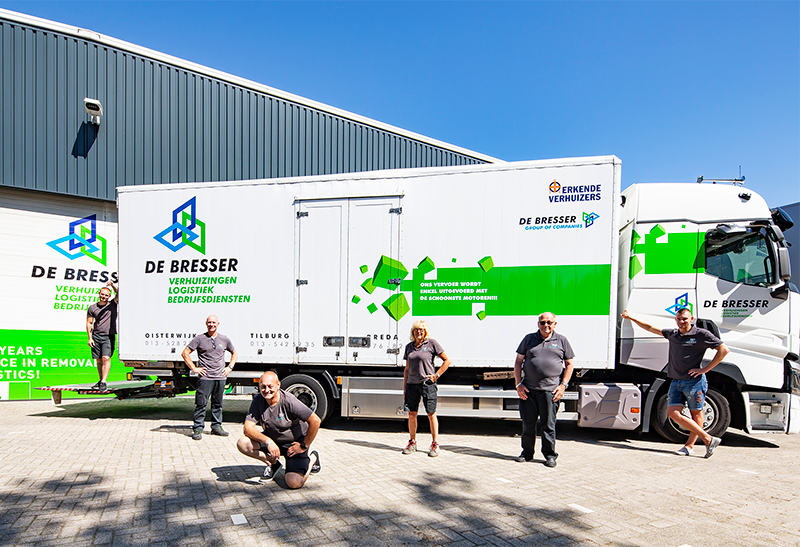

Zo lees je dit merkboek
De Bresser publiceert geen huisstijlgids, geen logo-handleiding en geen belettering- of kledingspecificatie; op debresser.nl staan alleen voorwaarden-PDF's (zie bevindingen.md). Dit boek zet daarom bij elk gegeven waar het vandaan komt en hoe zeker het is:
Letterlijk uit een bronbestand gehaald: de Elementor-stijl van debresser.nl of de pixels van het logobestand.
Gemeten of afgelezen van foto's. Belichting en compressie vertekenen kleur; laat De Bresser het bevestigen voor drukwerk.
Onze eigen afspraak waar De Bresser niets vastlegt. Geen feit over De Bresser.
Een regel die de opdrachtgever heeft gesteld. Gaat voor wat debresser.nl nu doet.
Logo 2024
Het logo bestaat uit vier delen: het beeldmerk (drie in elkaar grijpende ruiten), een kroon met SINDS 1923 en een hoeklijn, het woordmerk DE BRESSER in zwarte cursieve kapitalen, en twee regels: FULL SERVICE IN LOGISTIEK en GEWELDIG IN VERHUIZEN. exact
Bron: de-kievit-nl/logos/2024-07_De-Bresser-Logo-2024.png, byte-identiek (MD5 888b308d…) aan debresser.nl/…/2024/03/De-Bresser-Logo-2024.png.
{kind=link}
2024-07_De-Bresser-Logo-2024.png2024-07_De-Bresser-Logo-2024-WIT.png2024-04_De-Bresser-favicon.png
2024-04_TOP-MOVERS-De-Bresser.pngHoe het logo in de praktijk wordt opgedeeld
| Vorm | Waar gezien | Zekerheid |
|---|---|---|
| Volledig logo (met kroon en SINDS 1923) | Website-header, footer, favicon (kroon niet) | exact |
| Beeldmerk + woordmerk + twee regels, zonder kroon | Achterkant laadbak, zijkant bestelbus, verhuisdozen | foto |
| Woordmerk + twee regels, zonder beeldmerk | Cabinedeur vrachtwagen (beeldmerk los ernaast) | foto |
| DE BRESSER · GROUP OF COMPANIES + klein beeldmerk | Voorkant laadbak, onder het Erkende Verhuizers-logo | foto |
| Oud: regels VERHUIZINGEN / LOGISTIEK / BEDRIJFSDIENSTEN, geen Top Movers | Oudere belettering, 2024-03_De-Bresser-verhuizen-opslag-logistiek-2.jpg | niet meer gebruiken advies |
| Jubileumlogo 100 jaar | 2024-03_DeBresser-100jaar.svg | alleen historisch advies |
Foto's: de-kievit-nl/fotos/2024-03_De-Bresser-Verhuisbedrijf-Tilburg.jpg, 2024-03_De-Bresser-Verhuizingen.jpg, 2024-04_Gebouwenbeheer-De-Bresser.jpg, 2024-03_Erkende-verhuizer-bedrijf-De-Bresser.jpg.
Gebruik
- Het originele bestand gebruiken, alleen schalen.
- Kleurlogo op wit of #EBEFF4, wit logo op navy #020D41 of op een rustig, donker deel van een foto.
- Vrije ruimte rondom minstens de hoogte van de letter D uit DE BRESSER. advies
- Op kleding en kleine formaten: beeldmerk + woordmerk; de twee regels vallen onder circa 40 mm breed weg. advies
- Natekenen, hertypen of in een ander lettertype zetten.
- Kleuren van de ruiten wisselen of het logo in één merkkleur zetten (behalve de witte variant).
- Uitrekken, schuin zetten, schaduw of gloed toevoegen.
- Het kleurlogo op felgroen of lichtblauw zetten: het groene en blauwe deel verdwijnen.
- Het logo in een gegenereerde foto laten "bakken" (zie beeld genereren).
onderzoek/07 in september 2024 is verkocht. Dat is een keuze van De Bresser; wij veranderen het logo niet.Kleuren
Er zijn twee paletten. Het logopalet hoort bij drukwerk, wagens en kleding. Het webpalet staat in de Elementor-stijl van debresser.nl en ligt er dichtbij, maar is niet gelijk (webblauw #007AC0 tegen logoblauw #007DC2; webgroen #7BD534 tegen logogroen #6DB23F).
Logopalet exact
donkerblauwe ruit
blauwe ruit, kroon, SINDS 1923, regel GEWELDIG IN VERHUIZEN
groene ruit, regel FULL SERVICE IN LOGISTIEK
DE BRESSER
Bron: meest voorkomende volledig dekkende pixels in 2024-07_De-Bresser-Logo-2024.png. Pantone- of CMYK-waarden zijn niet gepubliceerd onbevestigd.
Webpalet exact
navy: menu, koppen, links, contactbalk, reviewsectie
link-hover, pijltjes bij "Lees meer", knop "Alle reviews". Niet voor de Offerte-knop (zie huisregel)
sectie-achtergrond, reviewkaarten; verloop naar #FFFFFF op 20%
Offerte-knop (huisregel) en groene uitlichtkaart ("Duurzame werkomgeving", "Nieuw!")
secondary van de kit
lopende tekst (kit), grijzen #2F2F2F en #676767 voor zachtere tekst
grijs van de kit; de eyebrow-labels zijn grijs (tint niet apart gemeten)
globale kleur in de kit; waar hij gebruikt wordt is niet vastgesteld
Bron: post-8.css (Elementor-kit): primary #020D41, secondary #007AC0, text #000000, accent #7BD534, verder #33BCFA, #FFC400, #7A7A7A, #004B97, #2F2F2F, #676767, #EBEFF4, #001D21, #C7C7C7, #166909, #0A0A0A, #207AB4, #232C49. Gebruik per kleur afgelezen van de homepage op 1440 en 390 px; #33BCFA komt 76 keer voor in de header-stijl post-4261.css.
Voertuiggroen onbevestigd
gemeten op de groene band van de laadbak
gemeten op het groene vlak van de cabine
De belettering gebruikt een feller, geler groen dan het logo. Er is geen folienummer bekend; vraag De Bresser of de wrapfolie een vaste kleur heeft (bijvoorbeeld een Oracal- of 3M-nummer). Tot die tijd: #6DB23F voor alles wat bij het logo hoort, en de gemeten waarden alleen voor beeldgeneratie. advies
Contrast
| Combinatie | Verhouding | Gebruik |
|---|---|---|
| Wit op #020D41 | 18,5 : 1 | alles |
| #020D41 op #33BCFA | 8,6 : 1 | knoptekst, ook klein |
| Wit op #33BCFA | 2,2 : 1 | zo staan de meeste knoppen nu op debresser.nl; haalt WCAG AA niet. Voor andere knoppen dan Offerte: navy tekst. advies |
| Wit op #007AC0 | 4,6 : 1 | normale tekst net AA |
| #020D41 op #7BD534 | 10,0 : 1 | Offerte-knop, tekst op groen |
| Wit op #166909 | 6,9 : 1 | Offerte-knop bij hover en focus |
| #166909 tegen wit | 6,9 : 1 | rand van de Offerte-knop op wit en #EBEFF4 (het groene vlak zelf haalt daar maar 1,8 en 1,6 : 1) |
| Wit op #7BD534 / #6DB23F | 1,8 / 2,6 : 1 | niet voor tekst, ook niet op de Offerte-knop; op de wagens alleen in grote kapitalen |
| #7A7A7A op #EBEFF4 | 3,7 : 1 | alleen grote of vette labels |
Berekend met de WCAG 2.x-formule voor relatieve luminantie.
Typografie
Sora
Alle rollen op debresser.nl: primary 600, secondary 400, text 400, accent 500. Zelf gehost in gewichten 100 t/m 800. Op Google Fonts vrij te gebruiken (SIL Open Font License). exact
Bron: post-8.css en sora.css. Licentie: fonts.google.com/specimen/Sora.
| Rol | Kit-waarde |
|---|---|
| h1 | 45px, 600 |
| h2 | 600, regelhoogte 40px |
| h3 | 26px, regelhoogte 30px |
| lopende tekst | 400, regelhoogte 28px |
| links | #020D41, hover #33BCFA |
Webonderdelen
Nagebouwd met de kit-waarden. Container maximaal 1300px (1024 op tablet, 767 op mobiel), widget-afstand 20px. Afronding: kaarten 15px (soms 20px), knoppen en kleine elementen 5px, het witte logovlak in de header 0 0 20px 20px. exact
De Offerte-knop is altijd groen huisregel
Elke knop die naar de offerte leidt is groen: de knop "Offerte" in de header, elke "Offerte aanvragen" in een pagina, op wit, op #EBEFF4, op navy en op een foto.
| Achtergrond | #7BD534, het accent van de kit |
| Tekst | #020D41 navy, Sora 700 (10,0 : 1). Geen witte tekst: wit op dit groen is 1,8 : 1 advies |
| Rand | 1px #166909 zodat de knop op wit en #EBEFF4 zichtbaar blijft advies |
| Hover en focus | achtergrond #166909 (donkergroen uit de kit), witte tekst (6,9 : 1). Blijft dus groen advies |
| Vorm | afronding 5px, header-knop 8px × 15px binnenruimte, zoals nu op debresser.nl exact |
| Niet | de knop op een groen vlak zetten (zoals de uitlichtkaart); daar valt hij weg |
bevindingen.md.Regel: opdracht van de gebruiker, 24-09-2026: "make sure that the offerte button is always green." Huidige kleuren gemeten met de berekende stijl in Chrome op de pagina's van debresser.nl, en uit de widget-CSS (post-4462.css, header-knop d0503fb: achtergrond #33BCFA, tekst #FFFFFF, hover #020D41).
Onze diensten
Eyebrow boven navy kop
Grijs label in kapitalen, daaronder een navy kop in Sora 600. Zo begint bijna elke sectie op debresser.nl.
Offerte aanvragenOfferte-knop volgens de huisregel: groen, navy tekst.
Particulier verhuizen
Witte kaart op #EBEFF4, blauw lijnicoon.
›Lees meerDuurzame werkomgeving
Uitlichtkaart in accentgroen #7BD534.

Reviewsectie
Navy vlak, reviewkaarten in #EBEFF4, gele sterren, lichtblauwe knop "Alle reviews", Klantenvertellen-badges.
Bron: homepage debresser.nl, schermafdrukken op 1440 en 390 px; kit-waarden uit post-8.css. De payoff en het nummer staan letterlijk zo op de site.
Header
Wit logovlak dat over de heldfoto valt (onderaan afgerond 20px), menu op navy, de knop "Offerte" en het Top Movers-logo (De-Bresser-Top-movers.png). Paginaovergang en link-hover in #33BCFA. De Offerte-knop in de header volgt de huisregel hierboven: groen, ook al staat hij op debresser.nl nu lichtblauw.
Fotostijl
- Echte ploegen bij echte witte wagens, op het eigen terrein met grijze bedrijfshal en blauwe lucht.
- Fel daglicht, hoge verzadiging; wit is echt wit.
- Mensen poseren met de De Bresser-doos in de handen of hurken ervoor.
- Groepsfoto's in een rij langs de laadbak, belettering goed leesbaar.
- Op de website krijgt de heldfoto een navy overlay met witte tekst.
Afgelezen van de foto's hiernaast en van de homepage. interpretatie


Belettering vrachtwagen en bus
Wit voertuig, felgroene band die aan het eind uiteenvalt in 3D-blokjes, keurmerken voorin, groot logo achterin, vestigingen met telefoonnummer onderaan. Afgelezen van drie foto's; De Bresser heeft geen beletteringsspecificatie gepubliceerd. foto
| Zone | Wat staat er |
|---|---|
| A · laadbak voor, boven | Logo Erkende Verhuizers, daaronder "DE BRESSER GROUP OF COMPANIES" met klein beeldmerk |
| B · laadbak, midden boven | Top Movers-logo (zwart met teal #009881) |
| C · laadbak, midden | Brede groene band vanaf de voorkant, die naar achteren uiteenvalt in groene 3D-blokjes. Witte kapitalen: "ONS VERVOER WORDT ENKEL UITGEVOERD MET DE SCHOONSTE MOTOREN!!!" |
| D · laadbak achter | Groot logo: beeldmerk boven, DE BRESSER, FULL SERVICE IN LOGISTIEK (groen), GEWELDIG IN VERHUIZEN (blauw); zonder kroon |
| E · laadbak onder | Vestigingen in gespatieerde zwarte kapitalen met telefoonnummer: OISTERWIJK 013-5282372, TILBURG 013-5425935, BREDA 076-8200233 |
| F · cabine | Witte Renault T. Deur: woordmerk + twee regels; beeldmerk los op de zijkant; groen blokkenvlak op de hoek van de cabine |
| Bestelbus | Witte elektrische bus (Citroën-wieldoppen). Achterzijpaneel: beeldmerk + woordmerk + regels; rechtsboven Top Movers en Erkende Verhuizers; groene blokjes achteraan; vestigingen onderaan; voordeur: groen stekker-blad-icoon met "100% elektrisch" (alleen op elektrische wagens) |
Foto's: 2024-03_De-Bresser-Verhuisbedrijf-Tilburg.jpg, 2024-03_De-Bresser-Verhuizingen.jpg, 2024-04_Gebouwenbeheer-De-Bresser.jpg, detail 2024-03_Erkende-verhuizer-bedrijf-De-Bresser.jpg. Top Movers-teal gemeten in 2024-03_De-Bresser-Top-movers.png exact.


Bedrijfskleding
De ploeg draagt antraciet met een klein Top Movers-logo op de linkerborst. Op geen enkele foto staat het De Bresser-logo op kleding. foto
Op de kleding staat het Top Movers-logo huisregel
Op polo, sweater, softshell en jas staat het Top Movers-logo op de borst, niet het De Bresser-logo. Dat is het logo dat de ploeg nu draagt.
- Kleur: witte letters met de turquoise swoosh (#009881) op antraciet. Er is geen kant-en-klaar bestand in die kleuren.
2024-03_De-Bresser-Top-movers.pngheeft zwarte letters en een teal swoosh;2024-04_TOP-MOVERS-De-Bresser.pngentopmovers/logos-certificaten/2021-09_TOP-MOVERS-LOGO-wit.pngzijn helemaal wit. - Plaats: linkerborst van de drager (bij een frontale figuur de rechterkant van het beeld), zijwaarts 0,22 × de schouderbreedte vanaf de knoopsluiting, verticaal ter hoogte van de onderste knoop, helemaal op de stof.
- Maat: logobreedte is 16,5% van de schouderbreedte (mouwen inbegrepen). Niet groter maken om het leesbaar te krijgen; toon dan het beeld groter of snij krapper uit.
- Draaiing: staat de romp gedraaid, dan volgt het logo de draai van de borst (perspectief, vier hoeken op de stof), en staat het niet plat op het beeld.
- Niet: het De Bresser-logo op de borst, een tweede logo op mouw of rug, of een logo dat de generator zelf tekent.
Besluit: opdracht van de gebruiker, 24-09-2026 (via debresser-fc): "use the top movers logo on the shirt as its the one being used by them, make sure to note that down in the brand book." Plaatsing en maat volgens dereus/_ai-beelden/gereedschap/MERK-OP-KLEDING.md. Draaiing: gevraagd door de gebruiker bij werknemerversie 4 (debresser-58).
polo korte mouw, polo lange mouw of sweater
softshell met kraag en rits
zwarte gewatteerde werkjas
zwarte werkbroek met kniezakken, of spijkerbroek; donkere veiligheidsschoenen
Kleuren gemeten op 2024-04_De-Bresser-Uw-verhuis-partner.jpg en 2024-03_De-Bresser-Transport-Contact-e1711724004960.png (in fel licht tot #6C6666). onbevestigd
Top Movers, wit met teal, links op de borst, circa 7 tot 9 cm breed, geborduurd. Op mouw of rug is geen opdruk te zien, maar ruggen staan ook niet op de foto's. foto
Geen signaalkleuren (oranje, geel), geen slogans, geen logo van een ander bedrijf. De voorste man op Uw-verhuis-partner draagt een ander rood-navy borstlogo; dat is geen De Bresser.
Borduren of transferdruk vraagt een vectorbestand van het Top Movers-logo in wit met teal. Vraag dat op via De Bresser of Top Movers en teken het logo niet zelf na.


Dozen
Witte doos. Voorkant: beeldmerk, DE BRESSER en de twee regels, onderaan www.debresser.nl. Zijkant: het Erkende (Project) Verhuizers-merk. foto Volgens De Bresser zijn de kartonnen dozen voor 100% gemaakt van gerecycled materiaal. bron
De sluiting is op de foto's niet te zien. Beeldregel 1 (site/_werk/BEELDREGELS.md) zegt dat Top Movers-dozen een kliksluiting hebben en geen tape; voor De Bresser-dozen is dat niet bevestigd. Toon in gegenereerd beeld daarom geen tape. advies
Foto's: 2024-03_De-Bresser-Verhuisbedrijf-Tilburg.jpg, 2024-03_De-Bresser-Verhuizingen.jpg. Gerecycled: debresser.nl/duurzaam-verhuizen.
Prompts voor wagens, kleding en dozen
site/_werk/BEELDREGELS.md
- Geen merk- of keurmerklogo's in gegenereerde foto's (regel 2). Genereer lege vlakken en zet het echte PNG-logo er daarna als overlay op.
- Gegenereerde mensen alleen met de zes goedgekeurde gezichten in
beeldronde-debresser/gezichten/(gebruiker, 24-09-2026). Die vervangen de "mixbibliotheek kop-01 t/m 19" uit regel 4; die map bestaat op deze machine niet. - Kleding: genereer een lege linkerborst; het Top Movers-logo komt er daarna als overlay op, volgens de huisregel bij Kleding (16,5% van de schouderbreedte, ter hoogte van de onderste knoop, meegedraaid met de borst).
- Tekst in gegenereerd beeld wordt wartaal (regel 3). Laat de generator geen letters maken; tekst komt er als overlay op.
Vrachtwagen
Na generatie: zones A, B, D en E (zie schema) als overlay met de originele logobestanden. Slogan in de band ook als overlay, witte kapitalen.
Elektrische bestelbus
Medewerker, zomer
Medewerker, winter
Verhuisdoos
Negatief (voor elke prompt)
Bronnen
- debresser.nl, homepage, geraadpleegd september 2026: schermafdrukken 1440 en 390 px.
- post-8.css: Elementor-kit met globale kleuren, lettertypes, koppen, container.
- post-4261.css: header-stijl.
- sora.css: Sora zelf gehost, 100–800.
- debresser.nl/duurzaam-verhuizen: dozen van 100% gerecycled materiaal.
- Logo's:
de-kievit-nl/logos/(herkomst inde-kievit-nl/manifest.csv). - Foto's:
de-kievit-nl/fotos/: Verhuisbedrijf-Tilburg, Verhuizingen, Gebouwenbeheer, Erkende-verhuizer-bedrijf, Uw-verhuis-partner, verhuizen-opslag-logistiek-2, Transport-Contact. - Beeldregels:
site/_werk/BEELDREGELS.md, regels 1 t/m 4. - Verkoop logistieke tak:
onderzoek/07-de-kievit-en-de-bresser.md.